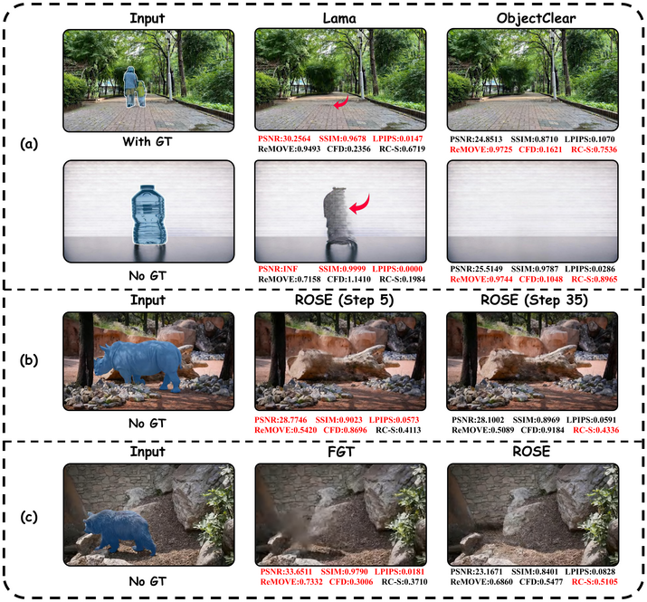
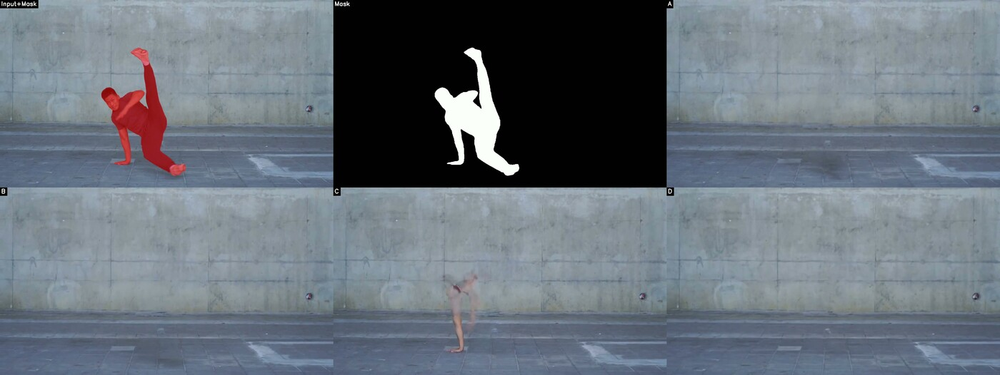
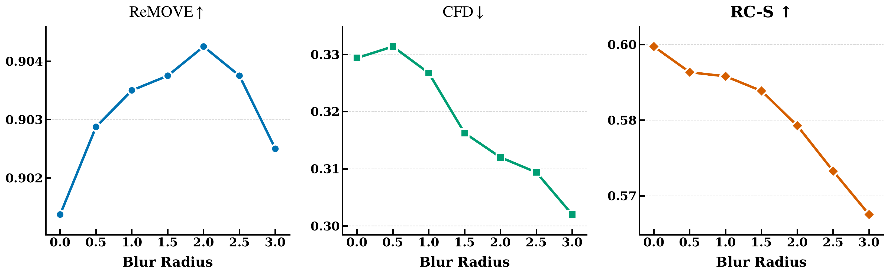
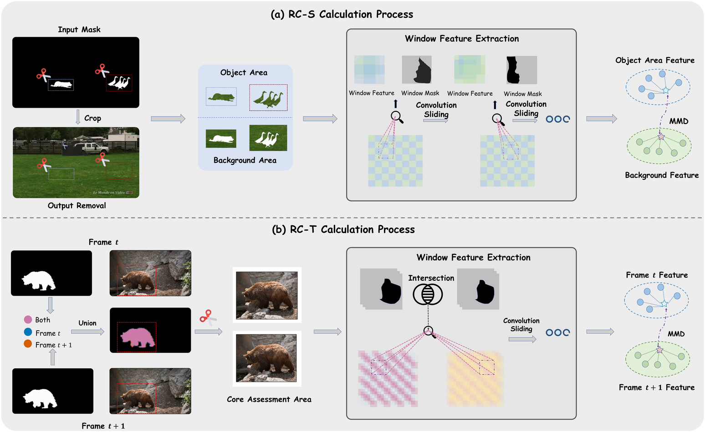
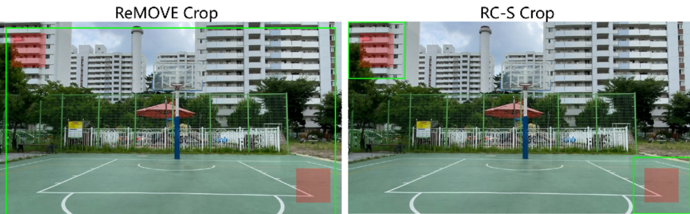
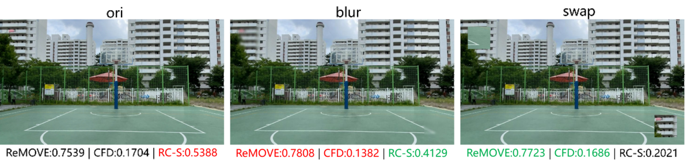
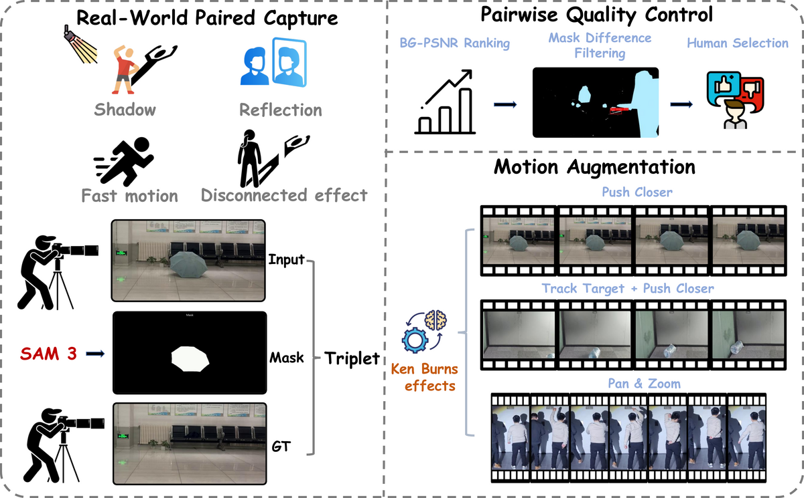
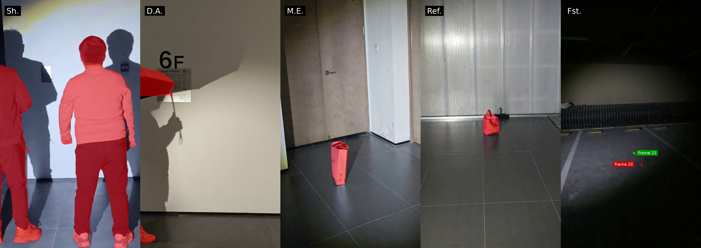
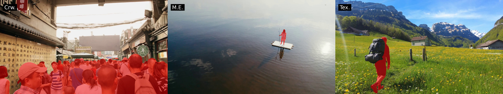
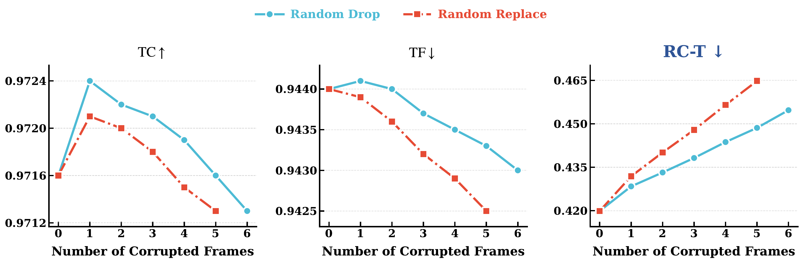

Evaluating object removal in images and videos remains challenging because the task is inherently one-to-many, yet existing metrics frequently disagree with human perception. Full-reference metrics reward copy-paste behaviors over genuine erasure; no-reference metrics suffer from systematic biases such as favoring blurry results; and global temporal metrics are insensitive to localized artifacts within edited regions.
To address these limitations, we propose RC (Removal Coherence), a pair of perception-aligned metrics: RC-S, which measures spatial coherence via sliding-window feature comparison between masked and background regions, and RC-T, which measures temporal consistency via distribution tracking within shared restored regions across adjacent frames. To validate RC and support community benchmarking, we further introduce PROVE-Bench, a two-tier real-world benchmark comprising PROVE-M, an 80-video paired dataset with motion augmentation, and PROVE-H, a 100-video challenging subset without ground truth. Together, RC metrics and PROVE-Bench form the PROVE (Perceptual RemOVal cohErence) evaluation framework for visual media. Experiments across diverse image and video benchmarks demonstrate that RC achieves substantially stronger alignment with human judgments than existing evaluation protocols.
Existing evaluation metrics for object removal exhibit systematic biases that conflict with human perception.

Figure 1. Illustrative examples of metric bias in object removal evaluation. (a) Full-reference metrics reward copy-paste behavior over genuine erasure. (b) No-reference metrics favor blurry outputs across diffusion steps. (c) Traditional vs. diffusion-based methods show inconsistencies between metric judgments and visual perception.

Figure 2. RC-S captures locally visible side effects and residual artifacts. Human-perceived ranking (1 = best): D > B > A > C. RC-S ranking: D(1) > B(2) > A(3) > C(4), consistent with human perception. In contrast, ReMOVE ranks A(1) > B(3) > C(4) > D(2), and CFD ranks A(1) > B(2) > C(4) > D(3) — both incorrectly favor the residual-containing result A over the cleanest removal D.
FR metrics (PSNR, SSIM, LPIPS) assume strict point-to-point correspondence to a single reference, rewarding conservative copy-paste outputs over perceptually realistic restorations.
NR metrics like ReMOVE and CFD frequently assign inflated scores to blurry outputs and incorrectly penalize structurally sound restorations in complex occlusion scenarios.
Global temporal metrics (TC, TF) are dominated by unchanged background regions, failing to detect localized artifacts within the removed regions where object removal most commonly fails.

Figure 3. “Blur is Clean” bias analysis. As blur radius increases inside the masked region, ReMOVE scores incorrectly improve and CFD incorrectly decreases (appears better), while RC-S correctly and monotonically degrades — demonstrating its robustness against the blur-favoring bias.
We introduce a unified local distribution matching framework in deep semantic feature space, named Removal Coherence (RC), instantiated as two complementary metrics.

Figure 4. Overview of the proposed RC metrics. (a) RC-S measures intra-frame spatial coherence by comparing masked and background feature distributions within sliding windows. (b) RC-T measures inter-frame temporal consistency by comparing restored-region feature distributions across adjacent frames under union-based cropping and intersection-based evaluation.
RC-S evaluates spatial coherence by cropping each target region, extracting DINOv2 features, and applying a sliding-window MMD to compare feature distributions inside and outside the removed region. This enables fine-grained detection of local spatial incoherence that global metrics miss.
RC-T extends the local distribution matching design to the temporal domain. It jointly crops adjacent frames under a shared union mask, then measures feature distribution drift exclusively within the intersected restored regions, yielding sensitive detection of local temporal instability.
DINOv2 provides a perceptually sensitive feature space for assessing fine-grained local coherence, showing stronger alignment with low-level human visual characteristics.
Window-based comparison exposes regional inconsistency more explicitly than global aggregation, better matching the way humans visually inspect removal results.
Maximum Mean Discrepancy accurately measures local distribution shifts between restored regions and surrounding context, outperforming first-order cosine similarity.

Cropping strategies of ReMOVE vs. RC-S. Green boxes denote crop regions, red areas denote masks. ReMOVE uses a single enlarged crop even when targets are spatially far apart, introducing excessive irrelevant background that dilutes the feature difference. RC-S crops each target independently with local context, enabling fine-grained detection of incoherence.

Counter-intuitive rankings under local perturbations. We apply Gaussian blur or region swap to the masked areas. Human judgment clearly prefers: ori > blur > swap. However, ReMOVE and CFD produce the reverse ordering (red = best-ranked, green = second-best), while RC-S remains consistent with human perception.
A two-tier real-world benchmark for evaluating object removal in video, combining paired evaluability with unconstrained stress testing.

Figure 5. Construction pipeline of PROVE-M: real-world paired capture with controlled conditions, three-stage pairwise quality control, and Ken Burns-style motion augmentation applied synchronously to input–mask–GT triplets.
80 videos with aligned input–mask–ground-truth triplets captured in real-world scenes.
100 videos targeting challenging scenarios without ground truth.

(a) PROVE-M — Sample frames from the motion-augmented paired benchmark.

(b) PROVE-H — Sample frames from the hard real-world benchmark.
| Dataset | Real | GT | Shadows | Reflections | Multi-Effect | Disconnected | Crowds | Textured | Fast Motion | #Videos |
|---|---|---|---|---|---|---|---|---|---|---|
| DAVIS | ✓ | ✗ | ✓ | ✓ | ✗ | ✗ | ✗ | ✓ | ✓ | 90 |
| Movies | ✗ | ✓ | ✓ | ✓ | ✗ | ✗ | ✗ | ✗ | ✓ | 5 |
| Kubric | ✗ | ✓ | ✓ | ✗ | ✗ | ✓ | ✗ | ✗ | ✗ | 5 |
| GenProp | ✓ | ✗ | ✓ | ✓ | ✗ | ✗ | ✗ | ✗ | ✗ | 15 |
| ROSE-Bench | ✗ | ✓ | ✓ | ✓ | ✗ | ✓ | ✗ | ✗ | ✗ | 60 |
| PROVE-M (Ours) | ✓ | ✓ | ✓ | ✓ | ✓ | ✓ | ✗ | ✗ | ✓ | 80 |
| PROVE-H (Ours) | ✓ | ✗ | ✓ | ✓ | ✓ | ✓ | ✓ | ✓ | ✓ | 100 |
Quantitative evaluation of mainstream video object removal methods on the PROVE-M benchmark. ↓ means lower is better, ↑ means higher is better.
| Method | PSNR↑ | SSIM↑ | LPIPS↓ | ReMOVE↑ | CFD↓ | RC-S↑ | RC-T↓ |
|---|---|---|---|---|---|---|---|
| FGT | 21.6511 | 0.8619 | 0.2013 | 0.8622 | 0.3229 | 0.3797 | 0.8031 |
| ProPainter | 22.1846 | 0.8768 | 0.1559 | 0.8676 | 0.2774 | 0.4427 | 0.5951 |
| DiffuEraser | 22.0758 | 0.8706 | 0.1518 | 0.8681 | 0.3308 | 0.4787 | 0.4851 |
| VACE (1.3B) | 20.0826 | 0.8654 | 0.1545 | 0.8117 | 0.3283 | 0.4036 | 0.5217 |
| Minimax-Remover (1.3B) | 21.7476 | 0.8707 | 0.1542 | 0.8710 | 0.3202 | 0.4793 | 0.4485 |
| GenOmni (CogV5B) | 25.0165 | 0.9030 | 0.1223 | 0.8755 | 0.3842 | 0.5029 | 0.3145 |
| GenOmni (Wan1.3B) | 25.1480 | 0.9017 | 0.1109 | 0.8815 | 0.3457 | 0.5188 | 0.3238 |
| ROSE (1.3B) | 26.1333 | 0.9003 | 0.1212 | 0.8803 | 0.3364 | 0.4924 | 0.6538 |
| EffectErase (1.3B) | 27.0049 | 0.9098 | 0.1142 | 0.8841 | 0.3412 | 0.5270 | 0.2728 |
| UnderEraser (14B) | 28.3325 | 0.9156 | 0.0981 | 0.8824 | 0.2986 | 0.5188 | 0.3276 |
| SVOR (1.3B) | 27.4289 | 0.9239 | 0.0839 | 0.8836 | 0.2794 | 0.5236 | 0.2987 |
Quantitative evaluation of mainstream video object removal methods on the PROVE-H benchmark. ↓ means lower is better, ↑ means higher is better.
| Method | PSNR↑ | SSIM↑ | LPIPS↓ | ReMOVE↑ | CFD↓ | RC-S↑ | RC-T↓ |
|---|---|---|---|---|---|---|---|
| FGT | 29.4448 | 0.8615 | 0.1927 | 0.8474 | 0.3065 | 0.3716 | 0.5866 |
| ProPainter | 33.3531 | 0.9274 | 0.1063 | 0.8383 | 0.2830 | 0.3932 | 0.4453 |
| DiffuEraser | 31.4112 | 0.9178 | 0.1098 | 0.8440 | 0.3165 | 0.4387 | 0.3911 |
| VACE (1.3B) | 26.7266 | 0.8898 | 0.1071 | 0.8047 | 0.3288 | 0.4192 | 0.3438 |
| Minimax-Remover (1.3B) | 29.6021 | 0.8660 | 0.1315 | 0.8545 | 0.3320 | 0.4617 | 0.3277 |
| GenOmni (CogV5B) | 28.7643 | 0.8873 | 0.1183 | 0.8536 | 0.3516 | 0.5006 | 0.2141 |
| GenOmni (Wan1.3B) | 29.3140 | 0.8940 | 0.1027 | 0.8596 | 0.3422 | 0.5127 | 0.2368 |
| ROSE (1.3B) | 27.6261 | 0.8508 | 0.1402 | 0.8538 | 0.3361 | 0.4687 | 0.4373 |
| EffectErase (1.3B) | 24.3793 | 0.8156 | 0.1742 | 0.8532 | 0.3590 | 0.5081 | 0.2363 |
| UnderEraser (14B) | 27.4989 | 0.8485 | 0.1434 | 0.8560 | 0.3165 | 0.5075 | 0.2688 |
| SVOR (1.3B) | 27.5335 | 0.8907 | 0.1046 | 0.8574 | 0.3107 | 0.5166 | 0.2419 |
Note: Due to compliance requirements, the open-source data differs slightly from the data used in the paper. The results above are based on the open-source version and may exhibit minor numerical differences from the paper, but the overall trends remain consistent.
RC-S achieves the best average correlation with human rankings across six benchmarks, ranking first on five of six benchmarks under both Kendall's τ and Spearman's ρ.
| Metric | Kendall's τ | Avg. Spearman ρ | ||||||||||||
|---|---|---|---|---|---|---|---|---|---|---|---|---|---|---|
| RORD | OBER | DAVIS | ROSE | PROVE-M | PROVE-H | AVG | RORD | OBER | DAVIS | ROSE | PROVE-M | PROVE-H | AVG | |
| PSNR | 0.01 | — | — | 0.36 | 0.38 | — | 0.25 | 0.02 | — | — | 0.44 | 0.45 | — | 0.30 |
| SSIM | -0.22 | — | — | 0.11 | 0.43 | — | 0.11 | -0.31 | — | — | 0.11 | 0.46 | — | 0.09 |
| LPIPS | -0.23 | — | — | 0.24 | 0.33 | — | 0.12 | -0.28 | — | — | 0.28 | 0.37 | — | 0.13 |
| m-LPIPS | 0.19 | — | — | 0.68 | 0.68 | — | 0.52 | 0.24 | — | — | 0.75 | 0.75 | — | 0.58 |
| ReMOVE | 0.06 | 0.54 | 0.15 | 0.21 | 0.33 | 0.23 | 0.26 | 0.08 | 0.61 | 0.16 | 0.24 | 0.36 | 0.27 | 0.29 |
| CFD | -0.04 | 0.40 | 0.21 | 0.03 | 0.24 | 0.12 | 0.16 | -0.05 | 0.47 | 0.25 | 0.04 | 0.26 | 0.14 | 0.18 |
| RC-S (Ours) | 0.31 | 0.57 | 0.60 | 0.61 | 0.70 | 0.76 | 0.59 | 0.39 | 0.66 | 0.68 | 0.69 | 0.75 | 0.82 | 0.66 |
RC-T responds sensitively and monotonically to controlled temporal corruptions, whereas existing temporal metrics (TC, TF) remain largely insensitive.

Figure 6. Sensitivity-based validation of temporal metrics under increasing corruption severity. RC-T exhibits monotonically degrading scores, whereas TC and TF remain insensitive or even improve.
If you find our work useful for your research, please consider citing our paper: